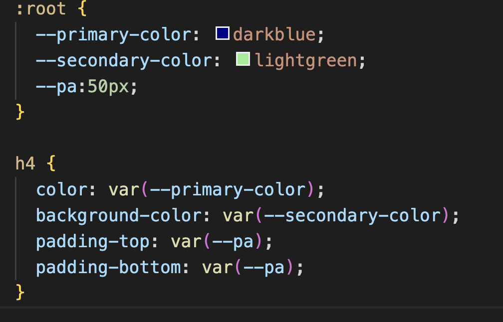

CSS variables are also known as CSS custom properties. They are a powerful feature that allows developers to use reusable values within CSS. They function like variables, and we can store and reuse values throughout the stylesheet.
CSS variables are declared by using the double dash (--) prefix followed by a name and an assignment value.

The benefits of using CSS variables include:
-
Reusability: You can define a value and reuse it throughout the stylesheet.
-
Dynamic Changes: CSS variables can be modified dynamically (automatically updated) using JavaScript.
-
Scoped Values: They can be scoped to specific elements. We are able to have different values for different parts of the document.